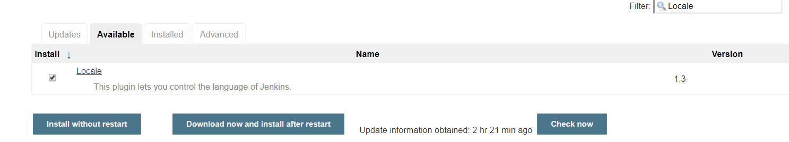
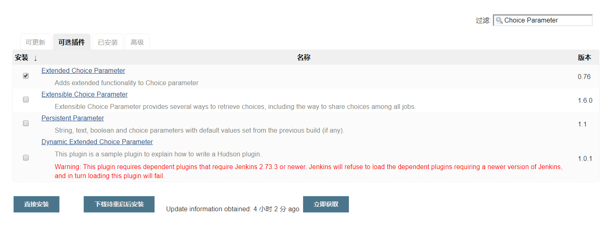

前言
有时在项目（前后端分离的）开发中，由于工期紧张，在后端接口未开发完成时，前端就要摄入开始进行数据绑定，此时因为后端一直在增加接口，需要不断地发布项目，部署项目；这个操作很简单，但是一直手动操作很麻烦。
又或者运行单元测试检验项目可用性，检查完之后打包交付给测试进行集成测试，可能中间还有QA 等质量检测阶段。在这些阶段中，我们会遇到很多情况，比如，项目中出现的Bug需要修复，有些遗漏的条件判断需要补充，产品经理临时变更需求，以及客户的需求变更等等。碰到上述这些情况，无疑我们需要再次进行开发，开发完成后又是验证，单元测试，打包交付等等一系列操作，可以看到，这些流程是非常长而且又繁琐的，手工进行这些流程难保不会错误，我们可以使用自动持续化集成打包来避免这些重复劳动又容易出错的事情。
实现方案
通常自动化项目部署的流程是这样：

通过搭建Jenkins构建环境，然后在Github上面注册Jenkins的Hook,每次代码的提交后，Jenkins 会自动拉取最新的代码进行自动化的打包和发布。
但是我本次使用的是SVN，本次就以SVN完成此实践
环境
系统：ubuntu-18.04.4-live-server-amd64_2.iso
需要安装docker、docker-compose
docker
docker-compose
1 | proxychains wget https://github.com/docker/compose/releases/download/1.26.0-rc2/docker-compose-Linux-x86_64 |
手动安装
jdk
安装Java，并配置环境变量
请注意，最好使用1.8来运行，我试过jdk11，有的版本运行不了的
输入
1 | java -version |
判断是否成功
maven
安装maven，并配置环境变量
输入
1 | mvn -version |
判断是否成功
jenkins
下载地址（建议不要下载最新版本，插件不好安装）：
http://mirrors.jenkins.io/war-stable-rc
流程：
直接运行
1 | java -jar jenkins.war |
等待日志中出现以下内容，我们就可以使用8080端口访问了：
1 | ************************************************************* |
一定要出现Jenkins is fully up and running后才能访问，然后输入密码，密码在上述日志中：
ec1e5d2e9eff49d8b81d18c68d14f156
即可登录进去。
插件
我们安装推荐插件即可，当然也可通过需要手动安装。
强烈建议使用下面Docker方式安装，安装速度超快
用户
首次登陆是匿名登陆，装完插件后，会提醒你新建一个用户；以后使用用户登陆，就不需要从日志中查看密码了
全局安全设置

全局工具设置
需要手动安装maven、Java

根据图来，要取消自动安装，使用我们自己安装的，声明他们的位置
创建项目
在首页左侧点击新建任务-构建一个自由风格的软件项目

源码管理
svn
- url后需要加
@HEAD才能部署最新版，否则是倒数第二版 - 输入svn账号密码并选择
git
构建触发器
选择触发远程构建
通过设置token令牌，通过url链接访问即可实现自动构建
需要组装以下url:
JENKINS_URL/job/SpringSecurity/build?token=TOKEN_NAME
当提交svn时访问此url就完成了自动构建
构建后操作
这里使用脚本来完成部署，部署在本机。需要安装hudson post build task插件，重要的是脚本怎么写
1 | #/bin/bash |
请更换路径，以及jar包名称
配置钩子程序
找到svn服务端的仓库
进入hooks目录
1 | cp post-commit.tmpl post-commit |
添加内容：
钩子程序由 post-commit.tmpl 复制得到
- 这里注意不要使用任何扩展名。如果按照我们习惯的使用.sh 扩展名则钩 子程序无法正常工作。
- 记得使用 chmod 命令设置为可执行权限
- 把原有内容注释，加入 curl 命令
curl
Linux 的 curl 命令用来发送 HTTP 请求。
- -X 参数：指定请求方式
- -v 参数：显示响应结果
- -u 参数：携带用户名/密码
- -H 参数：携带请求消息头信息
curl -X post -v -u [Jenkins 用户名]:[Jenkins 密码] -H "请求消息头信息" http://[服务器 IP 地址]:[服务器端口 号]/jenkins/job/[Jenkins 项目名称]/build?token=[身份验证令牌]
Docker安装(推荐)
docker-compose.yml
1 | version: '3.1' |
在含有上面文件的目录下运行：
1 | mkdir data |
安装环境
接下来在./data目录中安装Java、maven并在Jenkins中设置即可。同上，不在叙述
注：proxychains是我自己设置的代理，使用会加速安装速度，某些插件只能这样才能安装
插件
配置本地化（中文）
安装 Locale 插件

Manage Jenkins -> Configure System -> Locale

本地化效果图

安装动态参数插件
该插件的主要目的是为了方便我们后面在做项目构建时可以按照版本进行构建（支持一键回滚哦）

安装远程ssh
pubilsh over ssh